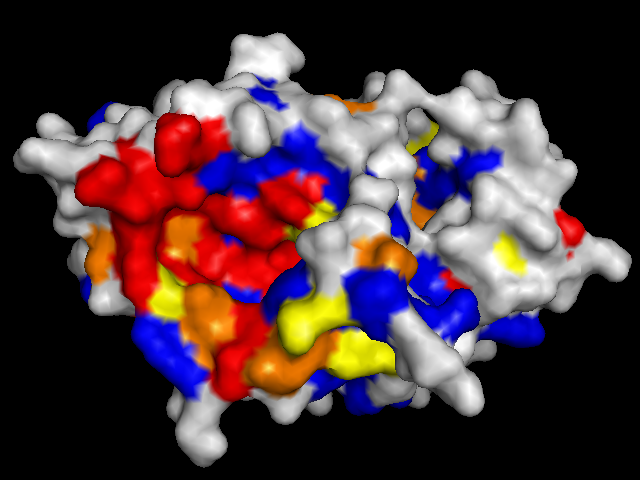

|
In general, conserved residues tend to be near or at known active sites. The proteins shown below
were colored according to the conservation scores calculated by Jalview,
which was also used to visualize the multiple sequence alignments produced by
MUSCLE . But conservation is not the only indicator of an active site; in most cases the largest pocket/cavity
is the active site. Images (a) and (c), rendered by PyMOL,
clearly show a highly conserved region with a large pocket; they
are the known active sites of FtsZ and CoaD.
|
|  |
|
| (a) FtsZ front |
(b) FtsZ back |
 |
|
| (c) CoaD front |
(d) CoaD back |